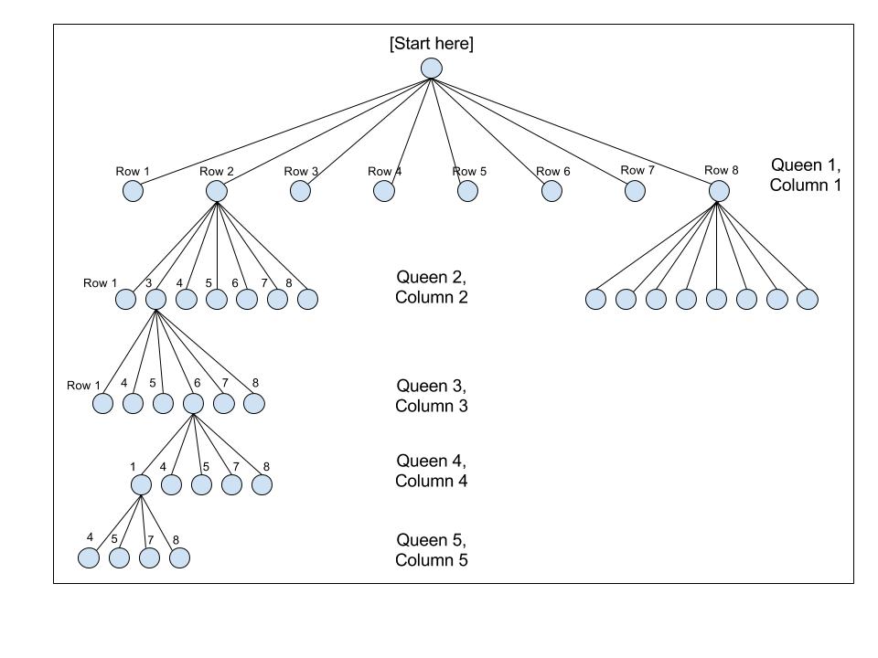
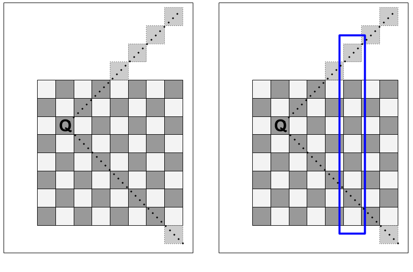

Table of Contents:
A Gentle Introduction to Recursion
Recursion, particularly recursive backtracking, is far and away the most challenging topic I cover when I teach the CSE 143 (Java Programming II) course at South Seattle College. Teaching the concept of recursion, on its own, is challenging: the concept is a hard one to encounter in everyday life, making it unfamiliar, and that creates a lot of friction when students try to understand how to apply recursion.
The key, as I tell students from day one of the recursion unit, is to always think in terms of the base case and the recursive case. The base case gives your brain a "trapdoor" to exit out of an otherwise brain-bending infinite conceptual loop. It helps recursion feel more manageable. But most importantly: it enables thinking about recursion in terms of its inputs and outputs.
More specifically, to understand recursion requires (no, not recursion) thinking about two things: where you enter the function and when you stop calling the function. These are the two least complicated cases, and they also happen to be the two most important cases.
College courses move at an artificially inflated pace, ill-suited for most community college students, and the material prescribed must be presented at the given pace mostly independent of any real difficulties the students face (there is only minimal room for adjustment, at most 2-3 lectures).
This means that, before the students have had an opportunity to get comfortable with the concept of recursion, and really nail it down, they're introduced to yet another mind-bending topic: recursive backtracking algorithms.
These bring a whole new set of complications to the table. Practice is crucial to students' understanding, and all too often, the only way to get students to practice (particularly with difficult subject matter like recursion) is to spend substantial amounts of time in class. My recursion lectures routinely throw my schedule off by nearly a week, because even the simplest recursion or backtracking exercise can eat up an hour or more.
Recursive Backtracking
Backtracking is an approach for exploring problems that involve making choices from a set of possible choices. A classic example of backtracking is the 8 Queens problem, which asks: "How many ways are there of placing 8 queens on a chessboard, such that no queen attacks any other queen?"
The problem is deceptively simple; solving it requires some mental gymnastics. (By the way, most people who have actually heard of the problem are computer scientists who were exposed to it in the process of learning how to solve it, leading to the hipster effect - it's often dismissed by computer scientists as an "easy" problem. The curse of knowledge at work.)
The recursive backtracking algorithm requires thinking about the squares on which to place the 8 queens in question as the set of choices to be made.
The naive approach ignores the constraints, and makes all 8 choices of where to place the 8 queens before ever checking if the queen placements are valid. Thus, we could start by placing all 8 queens in one single row on the top, or along one single column on the left. Using this approach, we have 64 possibilities (64 open squares) for the first queen, then 63 possibilities for the second queen, then 62 possibilities for the third queen, and so on. This gives a total number of possible combinations of:
(By the way, for those of you following along at home, you can do this calculation with Python:)
>>> from scipy import *
>>> math.factorial(64)/math.factorial(64-8)
178462987637760L
Even for someone without a sense of big numbers, like someone in Congress, that's still a pretty big number. Too many for a human being to actually try in a single lifetime.
Paring Down the Decision Tree
But we can do better - we can utilize the fact that the queen, in chess, attacks horizontally and vertically, by doing two things:
-
Limit the placement of queens so that there is one queen per column;
-
Limit the placement of queens so that there is one queen per row.
(Note that this is ignoring diagonal attacks; we'll get there in a minute.)
This limits the number of solutions as follows: the first queen placed on the board must go in the first column, and has 8 possible squares in which it can go. The second queen must go in the second column, and has 7 possible squares in which it can go - ignoring the square corresponding to the row that would be attacked by the first queen. The third queen goes into the third column, which has 6 open squares (ignoring the two rows attacked by the two queens already placed).
That leads to far fewer solutions:
and for those following along at home in Python:
>>> from scipy import *
>>> math.factorial(8)
40320
To visualize how this utilization of information helps reduce the problem space, I often make use of a decision tree, to get the students to think about recursive backtracking as a depth-first tree traversal.
(By the way, this is a strategy whose usefulness extends beyond the 8 queens problem, or even recursive backtracking problems. For example, the problem of finding cycles in a directed graph can be re-cast in terms of trees.)

So far, we have used two of the three directions of attack for queens. This is also enough information to begin an implementation of an algorithm - a backtracking algorithm can use the fact that we place one queen per column, and one queen per row, to loop over each row, and steadily march through each column sequentially (or vice-versa).
The Pseudocode
There is still a bit more to do to cut down on the problem space that needs to be explored, but before we do any of that, we should first decide on an approach and sketch out the psuedocode.
The structure of the explore method pseudocode thus looks like:
explore(column):
if last column:
# base case
add to solutions
else:
# recursive case
for each row:
if this is a safe row:
place queen on this row
explore(column+1)
remove queen from this row
The Actual Code
Over at git.charlesreid1.com/charlesreid1/n-queens I have several implementations of the N Queens problem:
Row, Column, and Diagonal Attacks
We have already utilized knowledge that there will only be one queen per column, and one queen per row. But one last bit of information we can utilize is the fact that queens attack diagonally. This allows us to eliminate any squares that are along the diagonals of queens that have already been placed on the board.
How to eliminate the diagonals? It basically boils down to two approaches:
-
Use a Board class to abstract away details (and the Board class will implement "magic" like an
isValid()method). -
Hack the index - implement some index-based math to eliminate any rows that are on the diagonals of queens already on the board.
The first approach lets you abstract away the details,
possibly even using a Board class written by a textbook,
which is lazy fine, if you are working on a practical problem
and need some elbow grease, but not so much if you are a computer science
student learning the basic principles of software design.
The second approach requires some deep thinking about how the locations of the N (or 8) queens are being represented in the program.
Accounting for Diagonal Attacks
At some point, when you use the above pseudocode, you are going to want to know the answer to the following question: for a given column k, what rows are invalid because they are on diagonals of already-placed queens?
To answer this, think about where the diagonal indices of chess board squares are located, and how to find the diagonals on column X attacked by a queen placed in column Y.
The following diagram shows a queen on row 3 of column 2, and the diagonal attack vectors of that queen. Each of the squares along those diagonal vectors can be ruled out as possible squares to place a queen. When selecting a square for the third queen, which goes in the third column, the second and fourth rows can both be ruled out due to the diagonals. (The third row, of course, can also be ruled out, due to the one-queen-per-row rule.)
However, the effect of the already-placed queen propagates forward, and affects the choice of possible squares for each queen after it. If we jump ahead in the recursive algorithm, to say, queen number 6, being placed on column number 6 (highlighted in blue), the queen in column 2 (row 3) still affects the choice of squares for that column (as do all queens previously placed on the board). In the case pictured in the figure, the seventh row (as well as an off-the-board row) of column 6 can be ruled out as possible squares for the placement of the 6th queen.

Accounting for these diagonal attacks can lead to substantial speed-ups: each queen that is placed can eliminate up to two additional squares per column, which means the overall decision tree for the N queens problem becomes a lot less dense, and faster to explore.
Why the N Queens Problem?
Invariably, some students will deal with this difficult problem by questioning the premise of the question - a reasonable thing to wonder.
This leads to a broader, more important question: why do computer scientists focus so much on games?
Games, like computers, are self-contained universes, they are abstract systems, they remove messy details and complications. They allow you to start, from scratch, by setting up a board, a few rules, a few pieces - things that are easy to implement in a computer.
Mazes, crossword puzzles, card games, checkers, chess, are all systems with a finite, small number of elements that interact in finite, small numbers of ways. The beauty of games is that those small rule sets can result in immensely complex systems, so that there are more branches in the chess decision tree (the Shannon number, \(10^{120}\)) than there are protons in the universe (the Eddington number, \(10^{80}\)).
That simplicity is important in computer science. Any real-world problem is going to have to be broken down, eventually, into pieces, into rules, into a finite representation, so that anything we try to model with a computer, any problem we attempt to solve computationally, no matter how complex, will always have a game-like representation.
(Side note: much of the literature in systems operations research, which studies the application of mathematical optimization to determine the best way to manage resources, came out of work on war games - which were themselves game-ified, simplified representations of real, complex systems. Econometrics, or "computational economics," is another field where game theory has gained much traction and finds many practical applications.)
Recursion, too, is a useful concept in and of itself, one that shows up in sorting and searching algorithms, computational procedures, and even in nature.
But it isn't just knowing where to look - it's knowing what you're looking for in the first place.